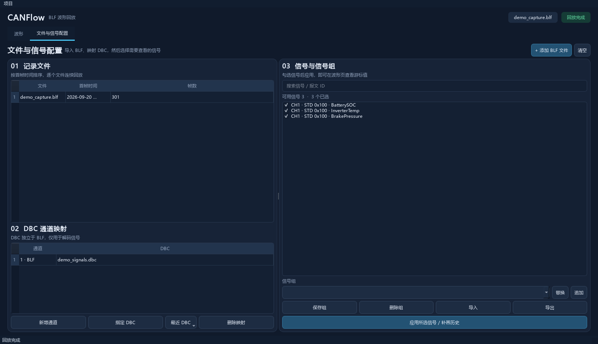
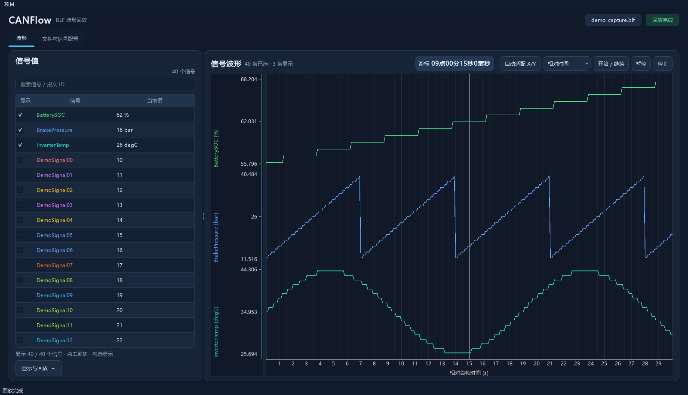

逐文件回放 BLF
多选记录后，按各文件首帧时间排序并逐个处理。波形沿用采集时间；时间范围重叠会在导入时提示。
核心能力 / 01
从多文件导入到信号查看，操作集中在一个桌面界面。
多选记录后，按各文件首帧时间排序并逐个处理。波形沿用采集时间；时间范围重叠会在导入时提示。
为通道指定 DBC，再选择要看的信号。没有 DBC 映射的通道仍可查看原始 CAN/CAN FD 报文。
可见信号各自使用独立纵轴，共享时间轴。搜索信号、读取游标值，并缩放或平移历史波形。
项目保存 DBC 路径及当前信号选择。常用选择可保存为全局信号组，在其他项目中替换或追加。
配置与查看 / 02
先建立通道与 DBC 的映射，再导入 BLF、选择信号。回放结束后新增信号时，CANFlow 会重新读取原始记录并补画历史波形。

使用流程 / 03
在本机运行，不需要上传 BLF 文件。
为 CAN 通道指定 DBC，并选择要分析的信号。
导入一个或多个 BLF，完成时间与文件预检。
逐文件快速处理，使用时间轴、暂停与停止控制进度。
在波形页搜索信号、查看游标数值并缩放轨道。
开始使用 / 04
项目目前通过源码运行。安装 Python 3.10 或更新版本后，在项目目录执行：
python -m venv .venv
.venv\Scripts\python.exe -m pip install -r requirements.txt
.venv\Scripts\python.exe run.py源码按 PolyForm Noncommercial License 1.0.0 授权，仅限许可证规定的非商业用途；商业使用需另获许可。
